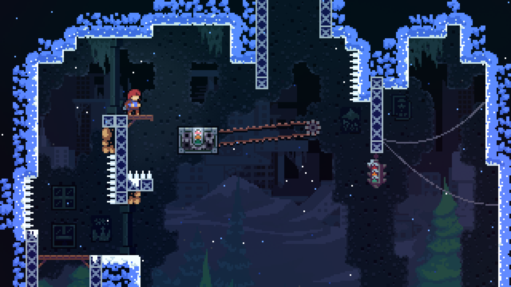

Platformer Games
Ori and the Blind Forest
Review
An incredibly visually appealing game with beautiful artwork, Ori and the Blind Forest is a Metroidvania platformer that follows Ori through an extensive world and a touching story. This game blends platforming with pretty graphics and an original soundtrack to create an experience you will not forget. The platformer itself is not incredibly challenging and involves interesting mechanics that help the game feel unique. If you enjoy Ori and the Blind Forest, then you will also enjoy the second game, Ori and the Will of the Wisps.
My favorite aspect of the game has to be the way the art, music, and animations work together to create a stunning world. I had an easy time grasping the controls and game mechanics and I found the levels to be the right combination of easy and challenging.
Screenshot taken by Rylie
Here are some tips and tricks!
- Use the skill points gained to advance your character!
- Try using a console controller if you find it challenging to do particular jumps or movement sequences!
- Use the Map! It can be easy to forget what you're doing or where you need to go, so checking your map often will help keep you on track.
Rating
8/10
Celeste
Review
Celeste is considered one of the hardest platformers, and I will have to agree. You play as Madeline as she climbs up Celeste Mountain, completing complex levels that also incorporates a story that highlights the characters inner struggles. This game is excellent for those who are experienced at platformers or those who are ready to dive into a challenge. The pixelated, 2D style is lovely and adds a retro feel.
This game is indeed challenging and I found that in order to progress you must be ready to die several times during each level. I enjoyed the visuals and the characters you met along the way.
Screenshot taken by Rylie
Here are some tips and tricks!
- Be patient and take your time!
- Collecting the strawberries isn't necessary! Ignoring the added challenge of collecting the strawberries may make the game more enjoyable.
- Remember, you will die a lot! The levels take effort and many tries to complete, don't get discouraged.
Rating
9/10